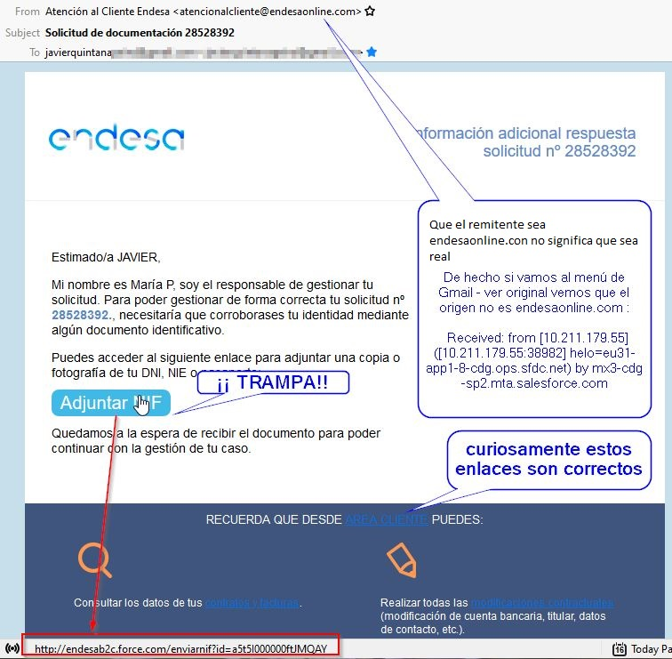

Ojo con los enlaces y el Phising

Imagen de Tumisu en Pixabay
No pinches en los enlaces alegremente.
Pincha en este enlace https://www.catedu.es
- ¿Realmente va a la página de CATEDU? 🤔
- ¡¡¡Encima le habrás dato al Trust me para que se ejecute el Script de la página!!! 😱 ¿Sabes que podrías haber ejecutado código malicioso??
¿Qué puedo hacer para que esto no me pase?
Fijarte dónde va exáctamente el enlace. **EL TEXTO DE UN ENLACE Y EL ENLACE SON COSAS INDEPENDIENTES" como has visto.
Para detectarlo
Pon el cursor encima sin hacer click y fíjate abajo a la izquierda :
Igualmente en correos electrónicos, links en imágenes, whatsapps, ... este es un correo real que me ha llegado, parece que es de Endesa, pero no lo es 😱 :

Me pregunto para qué quieren mi DNI escaneado .. 🤔
Lo que tenemos que hacer por ética es denunciar es la única manera de mantener a raya estos delicuentes, una manera fácil es desde el mismo gestor de email:

En resumen: Una de las técnicas del Phising: hacerse pasar por una entidad, banco, etc.. y sus enlaces van a otro sitio, con la intención de coger tus claves bancarias, tarjetas...
Un ejemplo típico es ofrecer el robot de cocina Lidl por 2€.
Te recomendamos leer este consejo de la Guardia Civil :
¡Evita caer en el #phishing!
— Guardia Civil 🇪🇸 (@guardiacivil) May 11, 2020
Aprender a identificar cualquier correo fraudulento 😈📧⚠ con esta infografía de @osiseguridad
➕ℹ👇https://t.co/ZojDB7HLW1 pic.twitter.com/kNeGm68NkX
Si no es HTTPS no te fies
El protocolo HTTPS (o candado en la barra de navegación) es para que los datos vayan cifrados.
Imagen de skylarvision en Pixabay
Por lo tanto SI NO LO LLEVA, NO TE FIES un banco, un comercio nunca navegaría sin cifrar los datos. ver
Pero que lo lleve NO es garantía, la mitad de páginas Phising ya tienen https
¿Sabes qué es una "Banca electrónica fraudulenta o phishing bancario"? ¿Sabrías identificar una #Web "clonada" antes de hacer clic en ella?
— Guardia Civil 🇪🇸 (@guardiacivil) May 25, 2020
Si estás "pez"... 🤔 no está de más que le eches un vistazo a las recomendaciones de esta infografía 👇👇 #SeguridadInternet pic.twitter.com/pEvcoD19GJ
No te precipites pinchando anuncios
Imagina que pulsas en descargar algo y te sale esta página
¿Clickas en "Haz click aquí para empezar la descarga"? NO eso es un anuncio (mejor dicho, una página con código malicioso), fíjate bien!! abajo a la derecha pone Publicidad con un tamaño de letra no apto para mayores de 50.
Y bajo ningún concepto des "Permisos" para descargar o continuar. Se instala código malicioso.
Regla de oro
No descargues software ni archivos de sitios no oficiales o de confianza.
y por supuesto ..
Nada de piratería!! Si te llega un programa de pago pero de manera gratuita piensa... ¿por qué lo hacen? ¿altruismo? No, lo más probable será para que tú ejecutes un código malicioso.

Ciudadanía digital por Alfabetizacion: INTEF www.http://aprende.intef.es/ y Privacidad: OSI Oficina de Seguridad del Internauta bajo licencia Creative Commons Reconocimiento-NoComercial-CompartirIgual 4.0 Internacional License.